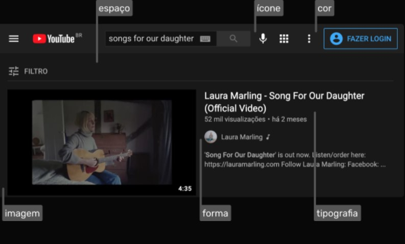
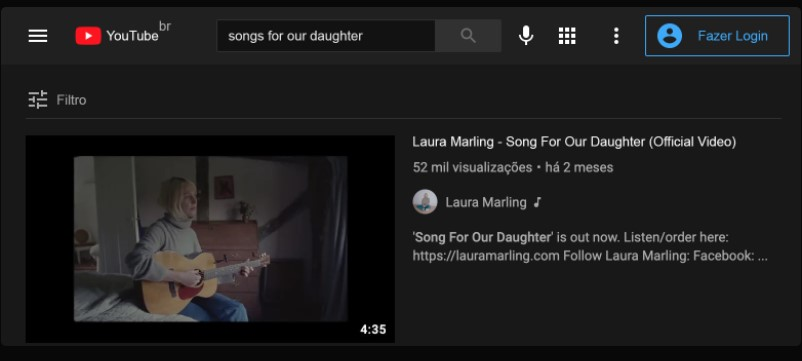
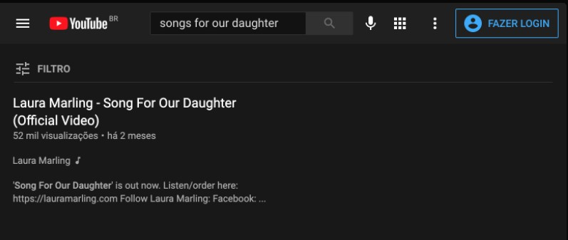
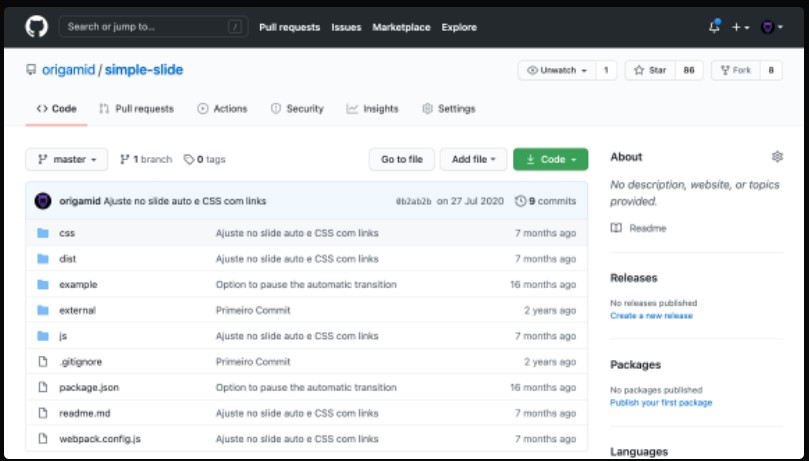

Início.
UI Design
UI = User Interface = Interface de Usuário
Elementos da Interface
Formas, espaço, cores, tipografia, imagens e ícones
Interface de Usuário
Interfaces digitais são compostas por textos, textos funcionais, botões, imagens, ícones, vídeos e outros elementos.
Obs segunda foto:
- border-radius como padrão da página
Elementos da Interface
As escolhas devem ser consistentes com o projeto. É na consistência que criamos uma unidade, e fazemos com que todos os elementos da interface pareçam pertencer a mesma.
Tipografia
Cores
Ícones
Imagens
Espaço

Importância dos Elementos
A ausência de um elemento apenas, pode arruinar o projeto.
até aqui tudo normal nesta interface.

Sem Tipografia

Sem Cores
Sem Ícones
Sem Imagens

Sem Espaço
Boa Interface
Propósito
- Existe um motivo claro para a existência do elemento.
Consistência
- Os elementos se comunicam visualmente. Cores em harmonia, espaçamentos equivalentes, ícones de uma mesma família e mais.
Necessários
- A remoção do mesmo tornaria a experiência pior.
Exemplo de Interface:

Os ícones são consistentes
O botão(verde) mais importante possui o maior contraste
As informações disponíveis possuem propósito
Harmonia entre botões arredondados(border-radius)